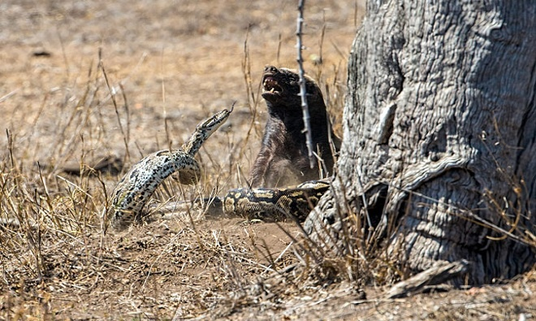

Lửng mật là một loài động vật có vú trong họ Chồn, bộ bộ Ăn thịt. Loài này được Schreber mô tả năm 1776.[2] Đây là loài bản địa châu Phi, Tây Nam Á, và tiểu lục địa Ấn Độ. Lửng mật ong không giống các loài lửng khác, thay vào đó, mang nhiều sự tương đồng giải phẫu với loài chồn. Nó được phân loại là loài ít quan tâm bởi IUCN do phạm vi rộng lớn của nó và sự thích nghi môi trường chung. Nó chủ yếu ăn thịt và ít nguy cơ bị săn trong tự nhiên vì lớp da dày của nó và khả năng phòng vệ rất dữ dội. Lửng trưởng thành có chiều cao đến vai 23–28 cm với chiều dài cơ thể 55–77 cm, với đuôi dài 12–30 cm. Con cái nhỏ hơn con đực. Con đực nặng 9–16 kg (20-35 lb) trong khi con cái nặng 5–10 kg (11-22 lb) trên trung bình. Chiều dài hộp sọ là 13,9-14,5 cm (5,5-5,7 in) ở con đực và 13 cm ở con cái.
Sự liều lĩnh của lửng mật nếu đứng thứ 2 có lẽ hiếm động vật nào khác dám nhận mình là vô địch. Chúng sẵn sàng lao vào tấn công, tranh cướp thức ăn với sư tử mà chẳng mảy may sợ hãi, người ta từng ghi lại được cảnh 6 con sư tử trưởng thành từng phải lùi bước trước 2 chú lửng mật.
Bên cạnh đó, loài động vật đáng sợ này còn sẵn sàng trèo cây hoặc vách cao, chịu hàng chục phát đốt của ong chỉ để thỏa mãn cơn thèm mật. Có người từng nói, chúng chính là những kẻ điên nhất thế giới tự nhiên. Và có vẻ họ không nói sai!